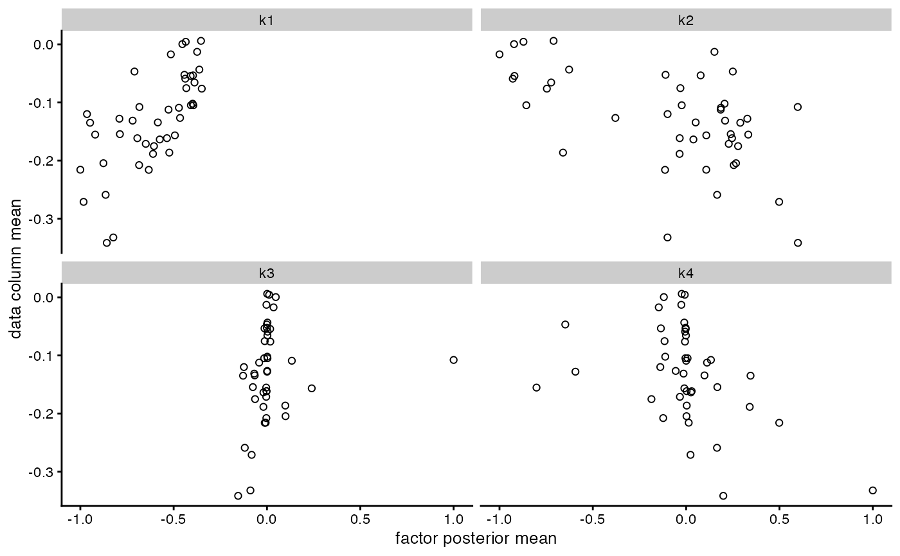
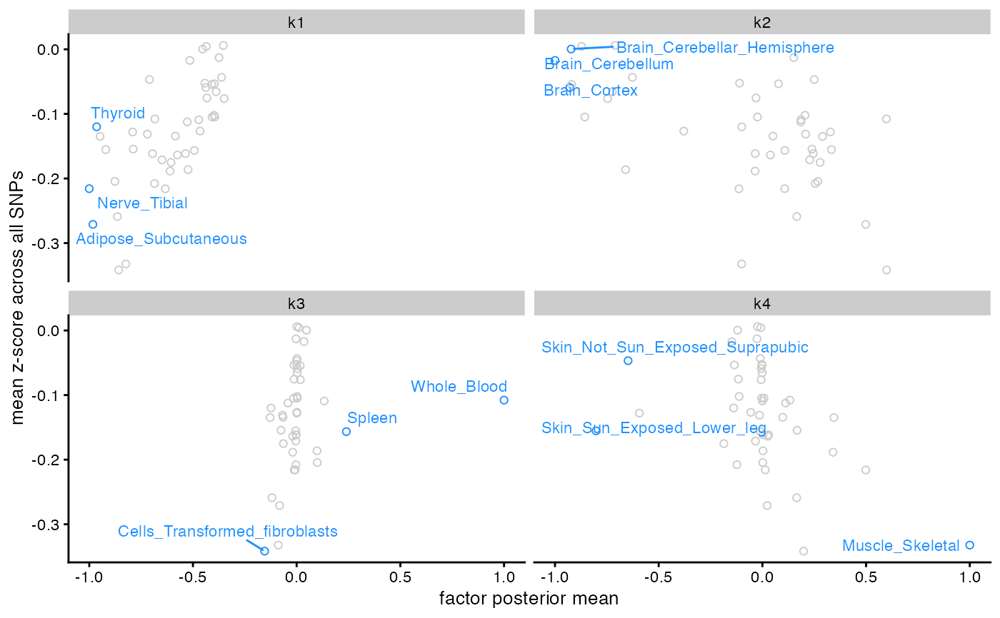
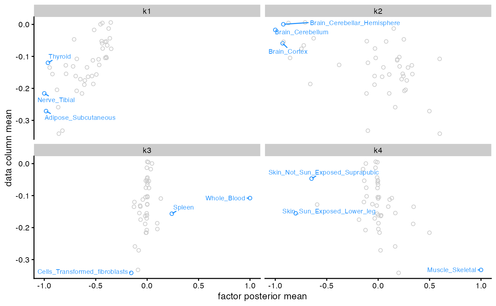

R/flash_plots.R
flash_plot_scatter.RdCreates a scatter plot or sequence of scatter plots, with position along the
\(x\)-axis defined by posterior means for factors \(f_{jk}\) or loadings
\(\ell_{ik}\) and position along the \(y\)-axis defined by a
user-supplied covariate. If a covariate is not supplied, then plots will
use data column or row means, \(\frac{1}{n} \sum_{i = 1}^n y_{ij}\) or
\(\frac{1}{p} \sum_{j = 1}^p y_{ij}\). One plot is created for
each value of \(k\) in kset. Values are normalized so that the
maximum absolute value for each factor \(f_{\cdot k}\) or set of
loadings \(\ell_{\cdot k}\) is equal to 1 (see ldf.flash).
flash_plot_scatter(
fl,
order_by_pve = FALSE,
kset = NULL,
pm_which = c("factors", "loadings"),
pm_subset = NULL,
pm_groups = NULL,
pm_colors = NULL,
covariate = NULL,
shape = 1,
labels = FALSE,
n_labels = 0,
label_size = 3,
max_overlaps = Inf,
...
)An object inheriting from class flash.
If order_by_pve = TRUE, then factor/loadings pairs
will be ordered according to proportion of variance explained, from
highest to lowest. (By default, they are plotted in the same order as
kset; or, if kset is NULL, then they are plotted in
the same order as they are found in fl.)
A vector of integers specifying the factor/loadings pairs to be
plotted. If order_by_pve = FALSE, then kset also specifies the
order in which they are to be plotted.
Whether to plot loadings \(L\) or factors \(F\).
A vector of row indices \(i\) or column indices
\(j\) (depending on the argument to pm_which)
specifying which values \(\ell_{i \cdot}\) or \(f_{j \cdot}\) are
to be shown. If the dataset has row or column names, then names rather
than indices may be specified. If pm_subset = NULL, then all values
will be plotted.
A vector specifying the group to which each row of the data
\(y_{i \cdot}\) or column \(y_{\cdot j}\) belongs (groups may be
numeric indices or strings). A group must be provided for each plotted row
\(i\) or column \(j\), so that the length of pm_groups is
exactly equal to the number of rows or columns in the full dataset or, if
pm_subset is specified, in the subsetted dataset.
A character vector specifying a color for each unique group
specified by pm_groups, or, if pm_groups = NULL, a vector
specifying a color for each plotted row \(i\) or column \(j\). Defines
the colors of the points.
A numeric vector with one value for each plotted row \(i\) or column \(j\). These values are mapped onto the plots' \(y\)-axis.
The symbol used for the plots' points. See
aes_linetype_size_shape.
Whether to label the points with the largest (absolute)
posterior means. If labels = TRUE, then n_labels points will
be labelled using geom_text_repel.
A (nonnegative) integer. The number of points to label. If
n_labels is set to a positive integer but labels = FALSE,
then the n_labels points with the largest (absolute) posterior
means will be highlighted in blue but not labelled. This can be useful for
tweaking labels using the full range of options provided by
geom_text_repel. For an example, see below.
The size of the label text (in millimeters).
A (nonnegative) integer. For each text label, the number of overlaps with other text labels or other data points are counted, and the text label is excluded if it has too many overlaps.
Additional arguments to be passed to
facet_wrap (e.g., nrow or ncol).
A ggplot object.
data(gtex)
fl <- flash(gtex, greedy_Kmax = 4L, backfit = FALSE)
#> Adding factor 1 to flash object...
#> Adding factor 2 to flash object...
#> Adding factor 3 to flash object...
#> Adding factor 4 to flash object...
#> Wrapping up...
#> Done.
#> Nullchecking 4 factors...
#> Done.
flash_plot_scatter(fl)

# Label axes and points:
library(ggplot2)
flash_plot_scatter(fl, labels = TRUE, n_labels = 3) +
labs(y = "mean z-score across all SNPs")

# For the full range of labelling options provided by the ggrepel package, set
# labels = FALSE (the default setting) and add geom_text_repel() manually:
library(ggrepel)
flash_plot_scatter(fl, labels = FALSE, n_labels = 3) +
geom_text_repel(size = 2.5, min.segment.length = 0)
